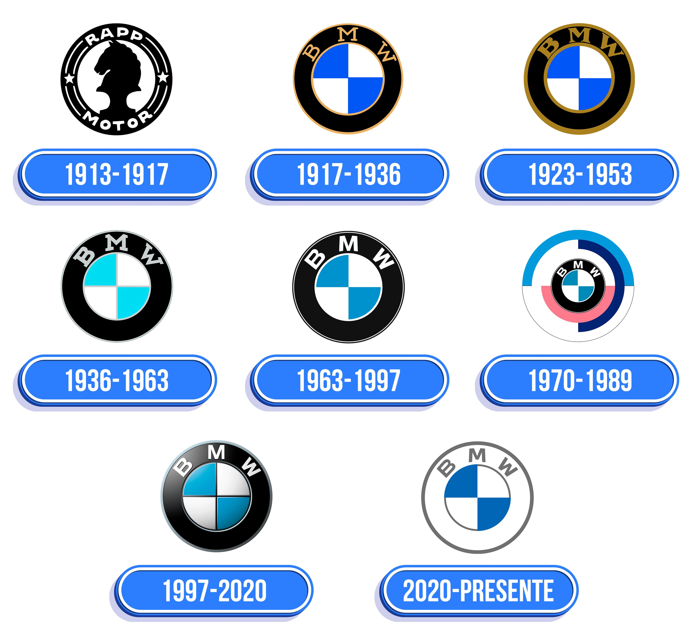
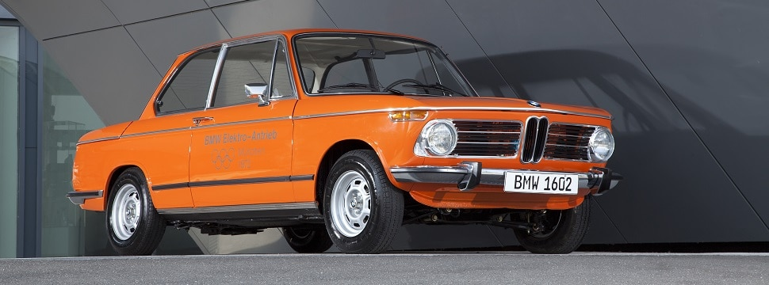
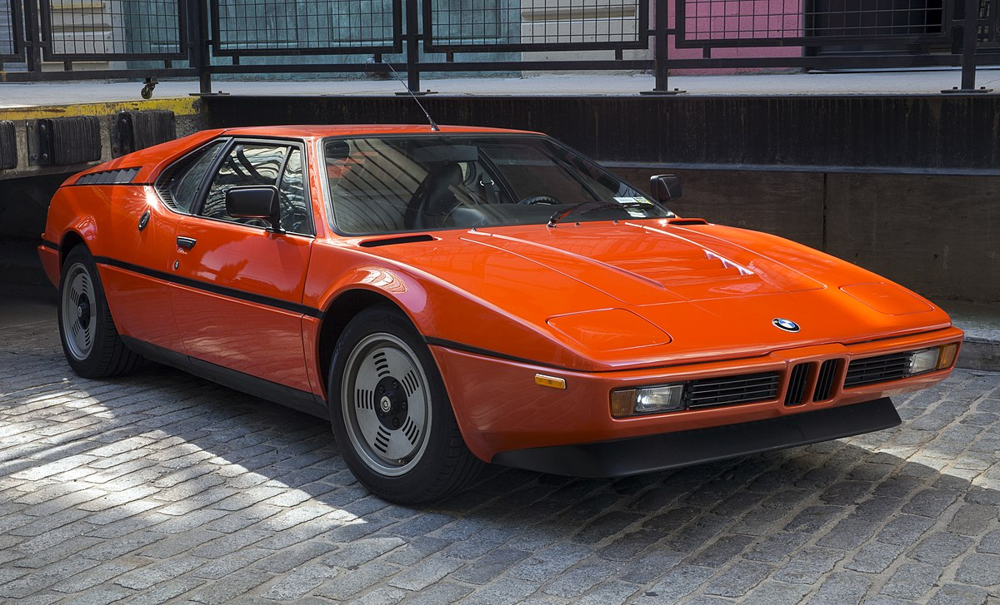
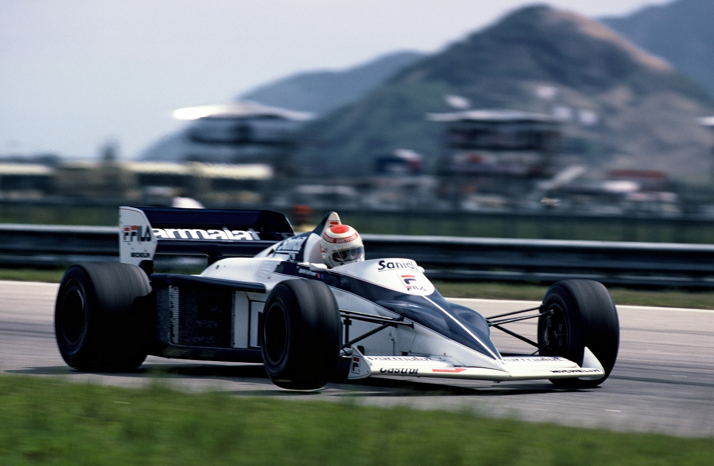
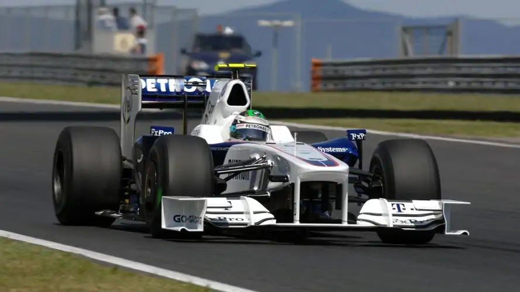

O que significa o logo da BMW?
Bem, essa é uma questão polêmica e que divide opiniões entre historiadores e apaixonados pela marca. Uma versão famosa é de que o logo simularia uma hélice de avião em movimento. Mas a própria BMW divulgou recentemente que as cores azul e branco não passam de uma homenagem à bandeira do Estado Livre da Baviera, local onde a marca foi fundada.

Pioneira dos elétricos
Carros elétricos não são mais novidade para ninguém. Você ouve falar deles toda hora e alguns já rodam tranquilamente pelas ruas brasileiras. O que você talvez não saiba é que a BMW fabricou seu primeiro elétrico em 1972, o BMW 1602, com o intuito de apresentá-lo durante os Jogos Olímpicos de Munique.

O primeiro Motorsport
Uma ideia trazida dos Estados Unidos por um consultor da BMW deu início ao que hoje é conhecido como "linha M". Tudo não passava de um conceito e tinha como lema a proposta de criar produtos versáteis para o dia a dia, mas também com uma pegada esportiva e, especialmente, rápidos. A ideia inicial foi apresentada à divisão esportiva BMW Motorsport GmbH (que futuramente viria a levar apenas o "M" como nome), em 1972. Com isso, iniciou-se o desenvolvimento de carros competitivos para provas de Turismo. Todas eram versões de modelos já existentes modificadas para ficarem mais potentes e leves.Entre 1976 e 1978, a divisão esportiva começou a ser direcionada para a criação de modelos exclusivos com a sigla "M", como os que vemos hoje. O primeiro integrante dessa família de modelos preparados de fábrica e que levavam as três faixas (azul, roxo e vermelho) foi o cupê M1.

O modelo tinha design assinado por Giorgio Giugiaro e impressionava pelas formas aerodinâmicas e esportivas. Na dianteira, por exemplo, chamavam a atenção os populares faróis escamoteáveis e a grade, que continha uma releitura do tradicional duplo rim. Além disso, o cupê também foi pioneiro na BMW por trazer o motor central traseiro. Sua proposta era tão marcante que ele chegou a ganhar uma categoria de automobilismo própria, chamada de M1 Procar.

Fórmula 1
Após o sucesso com o Cupê M1, a BMW Motorsport passou a se chamar BMW M e focou seus trabalhos no desenvolvimento para a Fórmula 1. A divisão contava com um time de engenheiros liderados por Paul Rosche e tinha Nelson Piquet ao volante. Com o brasileiro, a escuderia Brabham BMW conquistou o título, em 1983.Um dos projetos desenvolvido pelo time de engenheiros focava na construção de um motor pequeno e potente. O objetivo foi conquistado com um 1.5 litro capaz de entregar potência acima dos 600 cv. Era algo impressionante para um propulsor tão compacto!

Depois disso, foi necessário esperar até o ano 2000, quando voltou pelas mãos das Williams. Conseguiu emplacar múltiplas vitórias, nas mãos de Ralf Schumacher e Juan Pablo Montoya, fazendo inclusive, o colombiano terminar em terceiro nos campeonatos de 2002 e 2003.Depois de deixar a Williams, a montadora da Baviera decidiu tomar as rédeas e comprar parte da equipe Sauber F1. Desta forma, entre 2006 e 2009, a equipe alcançou alguns marcos notáveis, mas não atingiu as expectativas que tinha no projeto. Afinal, teve que se contentar com um terceiro lugar como o melhor resultado no campeonato de construtores, em 2007 (segundo, após a desclassificação da McLaren), e uma única vitória, com Robert Kubica, no Grande Prêmio do Canadá de 2008.Ficará para a história o fato de ter feito a estreia de uma jovem estrela, Sebastian Vettel, que comandou o GP dos Estados Unidos de 2007, substituindo Kubica. Vale lembrar que o piloto polonês sofreu no GP do ano anterior, o do Canadá, um dos mais espetaculares acidentes das últimas décadas.
